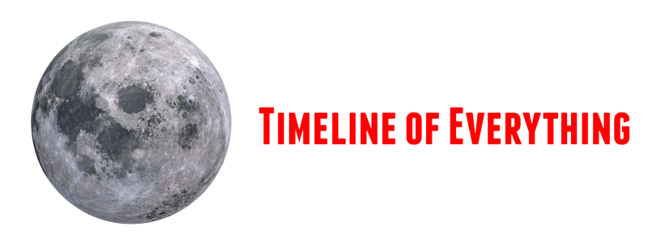

<!doctype html>
<title>{% block title %}{% endblock %} - Timeline</title>
<link rel="stylesheet" href="{{ url_for('static', filename='tailwind.css') }}">
<link rel="stylesheet" href="{{ url_for('static', filename='style.css') }}">
<link rel="stylesheet" href="https://use.fontawesome.com/releases/v5.8.1/css/all.css" integrity="sha384-50oBUHEmvpQ+1lW4y57PTFmhCaXp0ML5d60M1M7uH2+nqUivzIebhndOJK28anvf" crossorigin="anonymous">
<link title="timeline-styles" rel="stylesheet" href="https://cdn.knightlab.com/libs/timeline3/latest/css/timeline.css">
<link href="https://fonts.googleapis.com/css?family=Source+Sans+Pro:400,400i,600,600i,700,700i" rel="stylesheet">
<script src="https://cdn.knightlab.com/libs/timeline3/latest/js/timeline.js"></script>


<nav class="bg-grey w-full block  flex-grow lg:flex lg:items-center lg:w-auto">
    <a href="{{ url_for('index') }}" class=" block mx-auto  pl-2 pt-2 lg:my-4  w-24 lg:inline-block lg:w-1/4 ">
    
  </a>
  <!--Search Bar-->
  {% if timelines is defined %}
  <div class="search-area flex w-4/5 my-4 mx-auto lg:w-2/4 lg:mt-2  lg:pl-10 lg:h-10 pl-2  h-12 pb-2" >
    <input type="text" class="border border-grey px-3 w-full" placeholder="Search" onkeyup="searchTimelinesFilter()" id="search_timelines_input">

    <ul id="search_timelines_list_ul" class="search_list_ul">
    </ul>
    <button class="border border-grey w-12 hover:bg-grey-light bg-white" id="search_timelines_button">
        <i class="fa fa-search text-grey-dark"></i>
    </button>
  </div>

  <script>
    let search_timelines_list = JSON.parse({{ timelines | tojson | safe }});
    let search_timelines_list_ul = document.getElementById('search_timelines_list_ul');
    let search_timelines_input = document.getElementById('search_timelines_input');
    
    window.onclick = function (event) {
      if (event.target == search_timelines_input) {
        search_timelines_list_ul.style.display = 'block';
      } else {
        search_timelines_list_ul.style.display = "none";
      }
    };
    search_timelines_list.forEach(function (timeline) {
      let a = document.createElement("a");
      a.appendChild(document.createTextNode(timeline.title));
      a.setAttribute('href', '/' + timeline.id + '/view');
      let li = document.createElement("li");
      li.appendChild(a);
      // li.setAttribute("id", "element4"); // added line
      search_timelines_list_ul.appendChild(li);
    });

    search_timelines_list_ul.style.top = search_timelines_input.style.height;

    function searchTimelinesFilter() {
      let filter, li, a, i, txtValue;
      filter = search_timelines_input.value.toUpperCase();
      li = search_timelines_list_ul.getElementsByTagName("li");
      for (i = 0; i < li.length; i++) {
        a = li[i].getElementsByTagName("a")[0];
        txtValue = a.textContent || a.innerText;
        if (txtValue.toUpperCase().indexOf(filter) > -1) {
          li[i].style.display = "";
        } else {
          li[i].style.display = "none";
        }
      }
    }
  </script>
  {% endif %}
  <ul class="flex fixed pin-t pin-r lg:relative lg:justify-end my-4 mx-auto lg:w-1/4  h-10 pl-2">
    <li><a href="{{ url_for('blog.index') }}">Index</a>
    {% if g.user %}
      <li><span>{{ g.user['username'] }}</span>
      <li><a href="{{ url_for('auth.logout') }}">Log Out</a>
    {% else %}
      <li><a href="{{ url_for('auth.register') }}">Register</a>
      <li><a href="{{ url_for('auth.login') }}">Log In</a>
    {% endif %}
  </ul>
</nav>
<section class="content w-full" style="height: 80%">
  <header>
    {% block header %}{% endblock %}
  </header>
  {% for message in get_flashed_messages() %}
    <div class="flash">{{ message }}</div>
  {% endfor %}
  {% block content %}{% endblock %}
</section>
